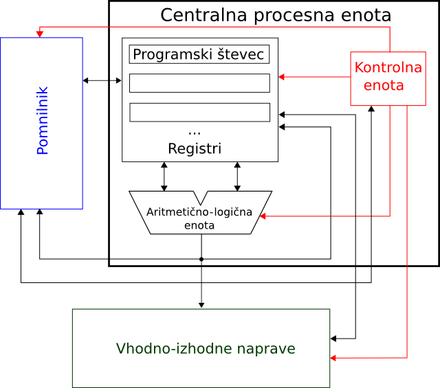

Licenca
To delo je na voljo pod pogoji slovenske licence Creative Commons 2.5:
priznanje avtorstva - nekomercialno - deljenje pod enakimi pogoji.
Celotna licenca je na voljo na spletu na naslovu http://creativecommons.org/licenses/by-nc-sa/2.5/si/. V skladu s to licenco je dovoljeno vsakemu uporabniku delo razmnoževati, distribuirati, javno priobčevati, dajati v najem in tudi predelovati, vendar samo v nekomercialne namene in ob pogoju, da navede avtorja oziroma avtorje in izdajatelja tega dela. Če uporabnik delo predela, kar pomeni, da ga spremeni, preoblikuje, prevede ali uporabi to delo v svojem delu, lahko predelavo dela ponudi na voljo le pod pogoji, ki so enaki pogojem iz te licence oziroma pod enako licenco.

Von Neumannova arhitektura
Poleg tega, da imamo pri von Neumannovi arhitekturi program v pomnilniku, zanjo velja še preprosto shema soodvisnosti gradnikov:

Sestoji iz 3 sklopov: centralne procesne enote (CPE), pomnilnika ter vhodno-izhodnih naprav. Osrednjo vlogo ima CPE, ki izvaja program tako, da prevzema ukaze enega za drugim iz pomnilnika ter jih izvršuje. Ukaz praviloma opravi neko operacijo nad podatki, ki jim rečemo operandi. Operandi so lahko prav tako shranjeni v pomnilniku ali pa so prebrani iz vhodno-izhodnih naprav. Vhodno-izhodne naprave omogočajo komunikacijo CPE z okolico. Tipične vhodno-izhodne naprave so tipkovnica, zaslon, omrežna kartica, grafična kartica idr.
CPE vsebuje:
- Registre, v katerih lahko hrani operande s katerimi računa.
- Aritmetično-logično enoto, ki zna izvajati zahtevane aritmetične in logične operacije.
- Kontrolno enoto, ki nadzira delovanje CPE.
Programski števec
Kontrolna enota najprej prebere ukaz iz glavnega pomnilnika. Ukaz se v glavnem pomnilniku nahaja na naslovu, ki ga hrani programski števec (ang. program counter, PC). Programski števec je eden od registrov v centralni procesni enoti, ki ima zelo pomembno vlogo, da hrani naslov naslednjega ukaza, ki se naj izvede. Vsakič ko se prevzame ukaz iz pomnilnika, se vrednost programskega števca samodejno poveča za 1, kar običajno zapišemo kot: PC = PC + 1.
To pravilo je značilno za von Neumannovo arhitekturo in zagotavlja, da se ukazi jemljejo iz pomnilnika zaporedoma. Poleg tega pravilo zagotavlja zaporedno izvajanje ukazov, kot jih je programer zapisal v programu.
Izvajanje ukaza se v splošnem dogaja v več zaporednih korakih:
- Ko je ukaz dostavljen iz pomnilnika do kontrolne enote, ga le-ta začne dekodirati.
- Dekodiranje ukaza je postopek, s katerim se iz ukaza ugotavlja, kakšna operacija naj se izvede v aritmetično-logični enoti in kje so operandi, potrebni za izvajanje ukaza.
- Operandi so najpogosteje v registrih in, če jih tam ni, jih dobimo iz pomnilnika ali vhodno-izhodne enote.
- Pripravljeni operandi se prenesejo na vhod aritmetično-logične enote, ki nad njimi izvede zahtevano operacijo.
- V zadnjem koraku se rezultat operacije shrani bodisi v notranje registre, pomnilnik ali na vhodno-izhodno enoto.
Dandanes pohitrimo izvajanje naših programov na računalnikih s tem, da jih izvajamo vzporedno. Sedaj, ko poznaš kako izgleda von Neumannova arhitektura in ko veš, kako izgleda CPE, ali si znaš zamisliti, kako doseči povzporejanje izvajanja programov?